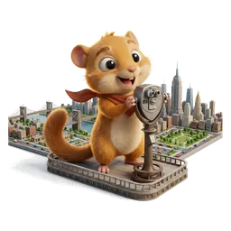
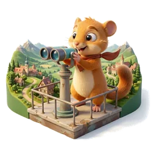
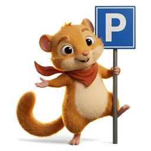

Gość
Bez konta
- Zapowiedź każdej wycieczki: zdjęcie, opis, czas zwiedzania i lista przystanków.
- Pierwsze akapity opisu każdego przystanku.
Gotowe plany wycieczek jednodniowych po miastach Europy: gdzie zaparkować, co zobaczyć godzina po godzinie i jaką misję dostaje dziecko na każdym przystanku.
Miasta: 8 · Umbria · Marche · Emilia-Romania
Dwa telefony, jedno zwiedzanie: rodzic ma plan dnia, dziecko ma misje.

Plan dnia od parkingu po ostatni przystanek: przystanki po kolei, czas zwiedzania, godziny otwarcia i mapa trasy, którą przybliżysz palcami. Jeden przycisk otwiera całą trasę w Google Maps.
Wyłącz przystanki, które dziś pomijacie. Dziecko skanuje kod drugim telefonem i dostaje własny widok: same misje, bez cen i reklam.
Osiem postaci do wyboru, kolor i wymyślona ksywka na ten dzień. Bez zakładania konta i bez prawdziwego imienia.
Rodzic ma historię i ciekawostki do opowiedzenia, dziecko misję, zagadkę i zadanie foto. Po misji przycisk „Idziemy dalej” prowadzi do następnego punktu.
Na starcie obrazek miasta jest zakryty: ile przystanków, tyle kawałków. Ostatnia misja odsłania całość, a obrazek można pobrać albo wydrukować jako kolorowankę.
Po ostatnim przystanku zdobyte miasto trafia do albumu rodziny, gdzie zbieracie kolejne wyprawy.
Każdy przystanek to misja: znajdź gryfa, policz gwiazdy, sfotografuj zamurowane okno. Zwiedzanie zamienia się w quest.

Dostajesz gotowy plan dnia z godzinami. Ostateczny kształt wycieczki ustalasz Ty: kiedy ruszyć, co pominąć i gdzie zostać dłużej.

Przystanek nr 1 to zawsze parking: cena, nawigacja i ostrzeżenie o strefie ZTL. Bez krążenia i mandatów.
Zobacz, co widzisz bez konta, co otwiera darmowe konto i co da wykupiona wycieczka.
Gość
Polecamy
Konto zakładasz tylko z adresem e-mail. Nie pytamy o imię, wiek ani telefon.
Od 1 czerwca 2027
Ceny pokażemy przed startem płatności.
Najważniejsza jest wycieczka. Gra i filmy z Quo to dodatek za przejście trasy.
Quolino to plan wycieczki jednodniowej dla rodziców i gra terenowa dla dzieci w tym samym mieście. Rodzic prowadzi trasę od parkingu po ostatni przystanek, a dziecko na każdym przystanku dostaje misję i zbiera za nią naklejki.
Telefon rodzica
Telefon dziecka
Dostępne regiony: Umbria, Marche, Emilia-Romania. Kolejne miasta dochodzą na bieżąco.
Otwórz region na telefonie, wybierz miasto na dziś i ruszaj. Pełną wycieczkę otwiera bezpłatne konto rodzica — bez aplikacji do pobrania.